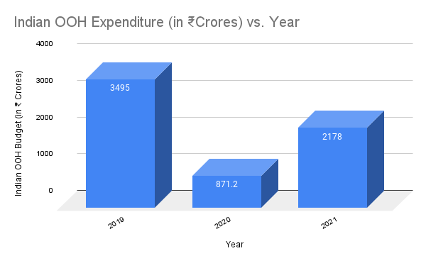

Revival And Digital Growth Of OUT-OF-HOME Advertising In India And Global Market
Adex
Introduction to Indian and Global OOH
The Out-of-Home (OOH) advertising industry in India, like other industries, faced a massive downturn due to the Covid-19 pandemic. However, the industry has started to see a significant revival in 2021. Besides, the global OOH advertising industry has also been showing a similar trend with digital out-of-home (DOOH) advertising gaining momentum. This case study examines the trends, challenges, and opportunities for the OOH advertising industry in India and globally.
In India, the estimated total spend in OOH advertising in 2021 was Rs. 2,178 crore, which is substantially lower than the Rs. 3,495 crore spent in 2019. However, the industry has shown signs of recovery, with a 69% increase in ad spend compared to 2020. The industry also experienced a decline in market share, slipping from 6% to 3% over the years, but it gained a 1% share over 2020.
Globally, the OOH advertising market was worth $33.47 billion in 2020 and is expected to reach $38.39 billion by 2025, growing at a CAGR of 2.8% during the forecast period. The global DOOH advertising market is expected to grow at a CAGR of 11.3% from 2021 to 2028. The global market is dominated by North America, followed by Europe, Asia-Pacific, and the rest of the world.
Segment Growrth
Conventional OOH market in India grew by 63%, while Transit Media grew by almost 100% in 2021. However, when compared to 2019, the Conventional OOH market still below pre pandemic level by 28% while Transit Media is below by 63%.
Indian Digital OOH market, in keeping with global trends, is beginning to take root, with an estimated 60,000 screens in 2021, up from 55,000 in 2020. DOOH spends also moved up phenomenally from Rs. 50 crore to 300 crore in 2021, but like Traditional OOH, it collapsed from Rs. 600 crore in 2019 to Rs. 50 crore in 2020. Digital OOH now has a share of 13.77%, but it is far below the global average of 40% while some Southeast Asian countries like Singapore has 60% DOOH adoption.
The global DOOH advertising market is driven by the increasing adoption of programmatic advertising, rising demand for better audience targeting, and the growing trend of data-driven advertising. The market is also driven by the increasing popularity of digital signage and the need for real-time content management.
Reason for Growth of DOOH in India
- Growing use of digital technology: India has experienced a rapid increase in the use of digital technology which has led to a greater demand for digital advertising solutions, including DOOH, which can provide advertisers with more targeted and dynamic messaging.
- Improved infrastructure: The infrastructure for DOOH has improved significantly in India, with the installation of digital screens in high-traffic areas such as airports, railway stations, and malls.
- Better measurement and accountability: With the use of digital technology, it has become easier to measure the effectiveness of DOOH campaigns and to hold advertisers accountable for their spending.
- Creative flexibility: DOOH offers advertisers greater flexibility, allowing them to produce dynamic and engaging campaigns.
Section Growth
The top five sectors that contribute to over 70% of total OOH ad spend in India are real estate, retail, FMCG, BFSI, and consumer services. However, compared to 2019, every category saw a decline. Real estate led the pack with a share of 22%, followed by retail, FMCG, BFSI, and consumer services. These sectors are also common across the globe as-
- Real estate: One of the largest contributors to OOH ad spend worldwide, with spends of $1.5 billion in the US and £258.8 million in the UK in 2020.
- Retail: The largest OOH advertising sector in the US, with a spend of $4.1 billion, and the third-largest in the UK, with a spend of £335.8 million in 2020.
- FMCG: A major spender globally with spends of $1.6 billion in the US and £431.3 million in the UK in 2020.
- BFSI: A significant contributor to OOH ad spend worldwide with spends of $1.2 billion in the US and £306.4 million in the UK in 2020.
- Consumer services: Another major spender globally, with spends of $2.2 billion in the US and £416.3 million in the UK in 2020.
Conclusion
The OOH advertising market is a significant and growing part of the global advertising industry, projected to reach $40 billion by 2023. The market is expected to recover from the impact of the COVID-19 pandemic, particularly with the growth
Future of OOH & DOOH in India:
- Growth Potential: The OOH advertising market in India is expected to grow at a CAGR of 12.6% between 2021 and 2026, according to a report by Mordor Intelligence. The DOOH market is also expected to grow significantly, with a CAGR of 25.6% between 2020 and 2025, according to a report by Research and Markets.
- Digital transformation: The COVID-19 pandemic has accelerated the digital transformation of OOH advertising in India, with more companies investing in DOOH to reach consumers who are spending more time outdoors. In fact, the DOOH market in India is expected to grow from $65 million in 2020 to $200 million by 2025, according to the Research and Markets report.
- Integration with technology: DOOH advertising is likely to become more tech-driven, with the integration of digital technologies such as programmatic advertising, real-time bidding, and data analytics. This will provide advertisers with more targeted and personalized advertising solutions.
- Changing consumer Behavior: The increasing adoption of smartphones and other mobile devices has changed the way consumers interact with OOH advertising. According to a report by Nielsen, 50% of Indian consumers have engaged with OOH ads via their mobile devices, making it important for advertisers to integrate mobile marketing strategies with their OOH campaigns.
- Impact of 5G: The rollout of 5G networks in India is expected to have a significant impact on the OOH and DOOH advertising industries. 5G networks will allow for faster and more reliable data transfer, which will enable advertisers to create more immersive and interactive advertising experiences.
- Emphasis on creativity: With increasing competition in the OOH and DOOH advertising industries, advertisers will need to focus on creativity and innovation to stand out from the crowd. This will require collaboration between advertisers, creative agencies, and technology providers.
- Impact of regulations: The Indian government has proposed regulations to improve transparency and accountability in the OOH industry, which could have an impact on the industry in the coming years. Advertisers will need to adapt to these changes and ensure compliance with the new regulations.